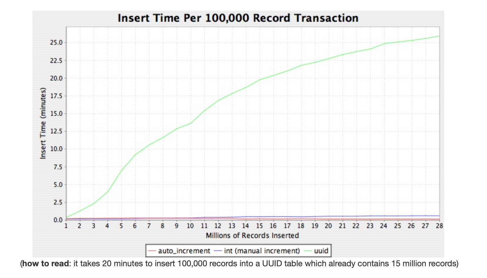
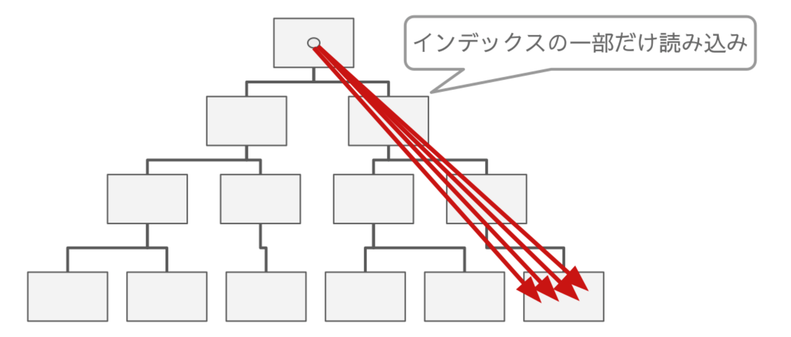
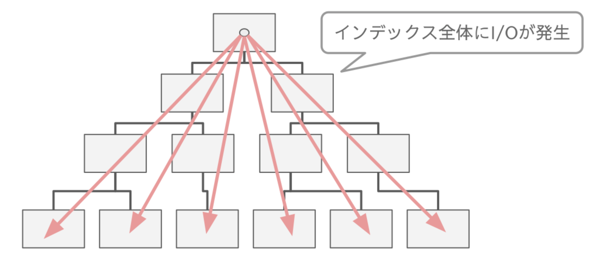
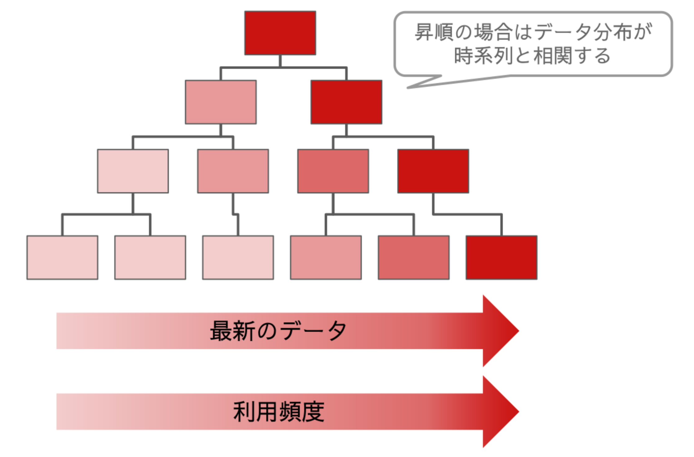

IDの生成方法
このドキュメントではデータベース保存するIDの生成方法についてまとめます。
AUTO_INCREMENT
DBがIDを連番で生成する方式
- メリット
- 数値型で扱える
- バイトサイズが小さいのでパフォーマンスが有利
- 連番なのでソート可能
- インデックスの空間効率がいい
- 数値型で扱える
- デメリット
- INSERTが完了するまでIDがわからない
- 非同期処理したいときでも先にIDは返したい場合、IDを採番するためだけに先にINSERTしないといけない
- データ量が増えてDBが複数になった場合、IDが重複する
- INSERTが完了するまでIDがわからない
UUID
アプリケーションがランダムにIDを生成する方式
- メリット
- アプリケーションがIDを生成するので、採番のためにDBアクセスしなくていい
- デメリット
- 数値型で扱えない
- ソートできない
- インデックスの空間効率が悪い
- INSERTにかかる時間が増えていく
INSERTにかかる時間が増えていく
https://kccoder.com/mysql/uuid-vs-int-insert-performance/

https://techblog.raccoon.ne.jp/archives/1627262796.html
AUTO_INCREMENTはシーケンシャルなので、リーフページを集中させることができ、キャッシュのヒット率が高くなる
=> レコードが増えてもパフォーマンスは一定を維持できる

UUIDはシーケンシャルではないので、INSERTするたびにテーブル全体のランダム位置に対するリーフページの読み込みが必要になる
=> レコードが増えるとパフォーマンスが劣化する

読み込み時は、1レコードを取得する場合はAUTO_INCREMENTとUUIDでパフォーマンスに差はない
が、実際は新しいレコードほど頻繁に読み込むことになる
最新のリーフノードほど参照頻度が高くなり、キャッシュヒット率が高くなるので、パフォーマンスが高くなる

UUIDの場合、データの分布は時系列と関係ないので、AUTO_INCREMENTのような恩恵を受けることはできない
MySQL8 の uuid_to_bin() 関数を使うとほぼシーケンシャルな値にできるらしい
ULID
UUIDと同じくランダムに値を生成するが、先頭がタイムスタンプ成分になっている方式
- メリット
- 時系列の並びになるため、UUIDの欠点を克服できる
- ソートできる
- 同一ミリ秒内での生成でも、同じミリ秒内に2^80 を超えない限り、ソート順が保証される
- デメリット
- 数値型で扱えない
生成手順
pythonのULIDライブラリ
https://github.com/ahawker/ulid
pip install ulid-py
>>> import ulid
>>> ulid.new()
<ULID('01GPN7CM2HS8A552Q7DX9D24R7')>
>>> id = ulid.new()
>>> id.str
'01GPN7FK0E0WY9QF46MPK0SRVK' # 26文字
>>> id.int
2023260978905909068547623492420166515